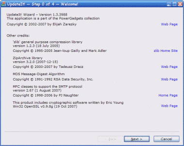
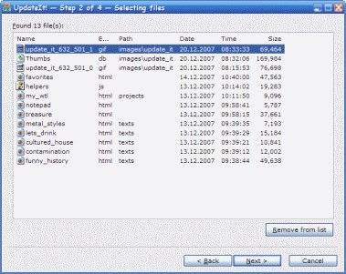

UpdateIt! — это приложение, предназначенное
для синхронизации содержимого исходной папки с другой (целевой) папкой, находящейся на
локальном компьютере или (и) FTP-сервере. Выполнено в виде „колдуна“, который
ищет в исходной папке (при желании — рекурсивно) все файлы, модифицированные позже
заданных даты/времени. Может скопировать найденные файлы (все или выборочно) в целевую
папку с сохранением исходной структуры вложенных папок. Позволяет закачать все файлы из
получившейся папки (с сохранением ее структуры) на заданный FTP-сервер; сжать получившуюся
папку в одноименный zip-архив; отослать этот архив на заданный адрес электронной почты.
 Шаг 1: выбор исходной и целевой папок. На этом
шаге необходимо задать имя папки, в которой будет производиться поиск обновленных
файлов и имя папки, в которую они будут скопированы или перемещены. Кроме того,
необходимо указать дату и время, начиная с которых файлы будут считаться обновленными.
Если установить флажок Include subfolders,
то поиск файлов будет производиться рекурсивно — в исходной папке и всех папках,
находящихся внутри нее. В поле Exclude mask(s) можно задать
одну или несколько (разделенных запятыми) масок файлов, которые следует исключить из
поиска. Для целевой папки можно установить флажок Cleanup this
folder first; в этом случае все содержимое целевой папки предварительно будет
удалено (при установленном флажке Delete files to Recycle Bin if
possible, файлы будут „удаляться“
в Корзину, если ее использование разрешено системными
настройками). Флажок Compare contents of the newer and existing
older files позволяет исключить из результатов поиска те файлы, содержимое
которых не отличается от копий, находящихся в целевой папке.
Шаг 1: выбор исходной и целевой папок. На этом
шаге необходимо задать имя папки, в которой будет производиться поиск обновленных
файлов и имя папки, в которую они будут скопированы или перемещены. Кроме того,
необходимо указать дату и время, начиная с которых файлы будут считаться обновленными.
Если установить флажок Include subfolders,
то поиск файлов будет производиться рекурсивно — в исходной папке и всех папках,
находящихся внутри нее. В поле Exclude mask(s) можно задать
одну или несколько (разделенных запятыми) масок файлов, которые следует исключить из
поиска. Для целевой папки можно установить флажок Cleanup this
folder first; в этом случае все содержимое целевой папки предварительно будет
удалено (при установленном флажке Delete files to Recycle Bin if
possible, файлы будут „удаляться“
в Корзину, если ее использование разрешено системными
настройками). Флажок Compare contents of the newer and existing
older files позволяет исключить из результатов поиска те файлы, содержимое
которых не отличается от копий, находящихся в целевой папке.
Шаг 2: просмотр списка обновленных файлов. На этом
шаге можно просмотреть список обновленных файлов, которые были найдены в исходной папке.
Для каждого файла выводится его имя, расширение, путь относительно исходной папки,
а также дата и время последнего изменения. Удалить файл(ы) из этого списка (и тем самым
исключить их из дальнейшей обработки) можно при помощи кнопки
Remove from list, предварительно выделив соответствующие
строки. Заметим, что файлы при этом удаляются только из списка, по-прежнему оставаясь в
исходной папке.
 Шаг 3: определение действий. На этом шаге
необходимо определить, что именно должно быть сделано с найденными файлами.
„Обязательным“ действием, выбираемым переключателями группы
Action to perform, является копирование или перемещение
файлов в целевую папку. Помимо этого, можно закачать ее содержимое (с полным сохранением
структуры) в заданный каталог на FTP-сервере; для этого необходимо установить флажок
Also upload file(s) to the FTP-server и заполнить поля
группы FTP Settings, указав адрес сервера и порт, а также
логин и пароль для доступа к нему. Установив флажок Also ZIP
folder with the copied/moved file(s), можно можно сжать целевую папку в
одноименный zip-архив. Получившийся файл может быть отправлен в виде вложения на
заданный адрес электронной почты; для этого необходимо установить флажок
Also send ZIPped folder via e-mail и заполнить поля группы
Mail Settings, указав адреса отправителя и получателя,
а также SMTP-сервер, который будет использоваться для отправки письма. Заметим, что эта
возможность доступна только в том случае, если ключ
HKEY_CURRENT_USER\Software\Elijah Zarezky\UpdateIt!\SMTP
системного реестра содержит численную величину Enable и ее
значение отлично от нуля.
Шаг 3: определение действий. На этом шаге
необходимо определить, что именно должно быть сделано с найденными файлами.
„Обязательным“ действием, выбираемым переключателями группы
Action to perform, является копирование или перемещение
файлов в целевую папку. Помимо этого, можно закачать ее содержимое (с полным сохранением
структуры) в заданный каталог на FTP-сервере; для этого необходимо установить флажок
Also upload file(s) to the FTP-server и заполнить поля
группы FTP Settings, указав адрес сервера и порт, а также
логин и пароль для доступа к нему. Установив флажок Also ZIP
folder with the copied/moved file(s), можно можно сжать целевую папку в
одноименный zip-архив. Получившийся файл может быть отправлен в виде вложения на
заданный адрес электронной почты; для этого необходимо установить флажок
Also send ZIPped folder via e-mail и заполнить поля группы
Mail Settings, указав адреса отправителя и получателя,
а также SMTP-сервер, который будет использоваться для отправки письма. Заметим, что эта
возможность доступна только в том случае, если ключ
HKEY_CURRENT_USER\Software\Elijah Zarezky\UpdateIt!\SMTP
системного реестра содержит численную величину Enable и ее
значение отлично от нуля.
Начиная с версии 1.0.2598, в приложении появилась возможность экспорта/импорта настроек
(только при работе под Windows 2000/XP), которая может быть полезна при переустановке
операционной системы. Соответствующие команды находятся в системном меню главного окна.
Заметим, что экспорт настроек возможен на любом этапе работы приложения, а импорт —
только на „нулевом“ шаге (страница Welcome!).
Системные требования:
- Windows 98/Me/2000/XP/2003
- некоторое количество свободной памяти
История версий:
- 1.2.3920 (16.10.2007)
Добавлена возможность задавать параметры архивации обновленных файлов: степень
сжатия и метод шифрования. Приложение пересобрано с версией 3.1.1 библиотеки
ZipArchive.
- 1.1.3870 (30.08.2007)
В приложение и его инсталлятор добавлена поддержка многоязычного интерфейса (на
данный момент поддерживаются английский и русский языки). Изначально язык выбирается
в процессе установки, но он может быть изменен в любой момент посредством пункта
Language / Язык системного меню.
- 1.0.3841 (01.08.2007)
Приложение пересобрано с версией 3.0.2 библиотеки ZipArchive.
- 1.0.3696 (16.03.2007)
Добавлена возможность аутенификации на SMTP-сервере, используемом для отправки письма;
поддерживаются методы SRAM-MD5, Login, Plain и NTLM. Добавлена возможность использования
SSL-соединения при работе с SMTP. Разработка проекта „переведена“ под
MS Visual C++ 7.1 SP1; начиная с этой версии, совместимость
исходного кода с компилятором Visual C++ 7.0 SP1 не гарантируется. Для сборки
этой версии из исходных текстов необходимо использовать проект
Repository ревизии 81 или
выше.
- 1.0.3410 (18.10.2006)
К приложению и его исходному коду добавлено лицензионное соглашение —
Apache License, Version 2.0.
Добавлен „универсальный“ инсталлятор, позволяющий выбрать один из
возможных типов установки (например, со всеми исходными тестами, необходимыми для
самостоятельной сборки приложения). Разработка проекта „переведена“ под
MS Visual C++ 7.0 SP1; начиная с этой версии, совместимость
исходного кода с компилятором Visual C++ 6.0 SP6 не гарантируется.
- 1.0.3346 (18.08.2006)
Добавлена возможность взаимодействия с FTP-серверами в так называемом „пассивном
режиме“ — флажок Use passive mode на шаге
Choosing an action (моя благодарность
Павлу Пименову за
„наводку“). Авторами улучшена реализация сжатия файлов в формате
ZIP и
отправки сообщений по протоколу
SMTP. Внимание:
для сборки этой версии из исходных текстов необходимо использовать проект
Repository ревизии 71 или
выше.
- 1.0.2800 (16.07.2005)
Добавлена поддержка „визуальных стилей“ Windows XP. Авторами улучшена
реализация сжатия файлов в формате
ZIP и
отправки сообщений по протоколу
SMTP.
- 1.0.2711 (23.04.2005)
Авторами улучшена реализация сжатия файлов в формате
ZIP и
отправки сообщений по протоколу
SMTP.
- 1.0.2598 (06.01.2005)
Добавлена возможность экспорта/импорта настроек приложения (только при работе под
Windows 2000/XP). Немного „улучшено“ системное меню.
Автором исправлено несколько ошибок в коде,
реализующем поддержку протокола SMTP.
- 1.0.2461 (29.12.2004)
Добавлена документация пользователя в формате HTML Help. Перед
установкой данной версии настоятельно рекомендуется штатным образом деинсталлировать
предыдущую.
- 1.0.2297 (25.07.2004)
Исполняемый файл приложения откомпилирован с оптимизацией по размеру.
- 1.0.2283 (11.07.2004)
Добавлена возможность сравнивать содержимое обновленных файлов с их старыми копиями,
находящимися в целевой папке.
- 1.0.2260 (20.06.2004)
Исправлено несколько орфографических ошибок на странице
Welcome!.
- 1.0.2259 (19.06.2004)
Автором исправлено несколько ошибок в коде,
реализующем поддержку протокола SMTP (этот код используется при отправке архива,
содержащего обновленные файлы, на заданный адрес электронной почты).
- 1.0.2172 (28.03.2004)
Исправлена очень глупая ошибка, из-за которой приложение не реагировало на системные
запросы при выполнении файловых операций. Исправлена ошибка, приводившая к некорректному
восстановлению пароля для доступа к FTP-серверу. Добавлена возможность минимизации окна
приложения.
- 1.0.2171 (27.03.2004)
В список обновленных файлов на странице Selecting files
добавлена колонка Size, отображающая их размер в байтах;
в колонке Name этого списка теперь выводятся не только
имена файлов, но и системные иконки, соответствующие их типам; добавлена возможность
сортировать список как по возрастанию, так и по убыванию. Программа установки теперь
записывает в системный реестр значение по умолчанию для масок файлов, которые должны
быть исключены из поиска.
- 1.0.2169 (25.03.2004)
Добавлена возможность задавать одну или несколько масок файлов, которые следует
исключать из поиска. При открытии диалога выбора папки в дереве теперь автоматически
выделяется элемент, соответствующий папке, имя которой указано в поле ввода.
- 1.0.2159 (15.03.2004)
Предусмотрено шифрование пароля для доступа к FTP-серверу при записи его в системный
реестр.
- 1.0.xxxx (?)
История не сохранилась. По всей видимости, первой стабильной версией, годной к
практическому использованию, была 1.0.1646…
Планы на будущее:
- сохранение „истории“ исходных и целевых папок;
- сохранение „истории“ адресов отправителя и получателя письма.
Авторские права © 2002—2007 И.Зарецкий